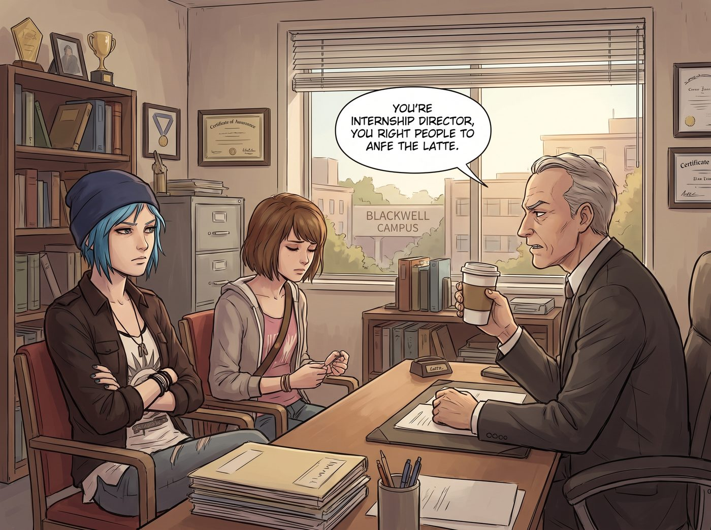

內化的壓迫

一、被指控的效率
這學期,校方替 Chloe 和 Max 安排了一份短期實習,對象是鎮上一間新開的、標榜「進步價值、社會影響力優先」的獨立媒體工作室。
第一天上工,任務是布置一批攝影器材、整理一份影展提案。Chloe 手腳俐落,不到一小時就把所有器材歸位、標籤貼好;Max 那份提案,邏輯清晰、排版精緻,連總監自己都挑不出明顯毛病。
兩人原本以為,這波表現足夠拿到一句誇獎。
總監——一位穿著昂貴棉麻襯衫、手裡端著八美元燕麥奶拿鐵的中年男人——卻皺著眉,把兩人叫進辦公室,神情凝重得像是在宣布什麼壞消息。
「Chloe,」他語氣沉重,「妳知道妳剛才那個效率,代表什麼嗎?」
「代表我手腳快?」Chloe一頭霧水。
「代表資本主義的規訓,」總監嘆了口氣,語重心長,「已經深深內化進了妳的身體。妳不假思索地用最短時間完成最大產出,這種『生產力至上』的慣性反應,恰恰是剝削體制最成功的洗腦成果——妳甚至沒有意識到,自己正在為一個壓榨妳的系統,免費賣命。」
Chloe 愣住了:「……我只是把器材放整齊而已。」
「Max,」總監轉向她,語氣同樣沉痛,「妳這份提案,結構完美到令人不安。這種對『完美』近乎強迫症的追求,本身就是父權資本主義審美暴力的產物——我建議妳們兩位,這週先別急著工作,去參加我們安排的『去生產力化』療癒工作坊,重新學習怎麼『不做』,而不是怎麼『做好』。」
Max 和 Chloe 面面相覷,一時不知道該做何反應。
二、雷區蹦迪
「去生產力化」工作坊過後,兩人回到日常任務,卻發現自己動輒得咎——說話語氣稍微直接一點,就會被單獨請去小會議室「溫柔談話」。
某次討論器材排版時,Chloe 忍不住拍了下桌子:「這設計爛透了,字體選得跟被卡車碾過一樣!」
項目主管立刻臉色一變,拉著她坐下,語氣嚴肅:「Chloe,我們提倡建設性反饋,妳剛才的語氣帶有情感壓迫性,讓團隊成員感到心理安全感缺失。」
「我只是說那個字體很醜,」Chloe 翻了個白眼翻到天靈蓋,「你們這裡是玻璃做的辦公室嗎?」
Max 在旁邊,幾乎是本能反應,在桌子底下瘋狂踢她的鞋頭,搶在她繼續開口前,用極度委婉的措辭「同聲傳譯」:「Chloe 的意思是,我們或許可以嘗試更具動態張力的視覺呈現方式……」
項目主管這才滿意地點點頭,渾然不覺自己剛才那番話,聽起來比 Chloe 原本那句「字體很醜」荒謬十倍。
三、不夠進步的訓斥
實習進行到第二週,總監再次把兩人叫進辦公室,這次的語氣,帶上了一種居高臨下的失望。
「Max,」他抿了口拿鐵,慢條斯理地開口,「妳的黑白膠片視角太過傳統,缺乏對邊緣交織性的敘事賦權;Chloe,妳的整體形象帶有過時的攻擊性符碼,不太符合我們機構倡導的無害化進步方針。」
他頓了頓,語氣裡帶著一絲教育意味的憐憫:「我知道你們的背景,或許讓你們難以真正理解什麼是『進步』。這需要時間,還有系統性的學習。」
辦公室裡陷入短暫的死寂。
四、破防與反殺
Chloe 猛地拍案而起,椅子被帶得往後倒,發出刺耳的聲響。
「老娘十四歲死了爹,」她的聲音發抖,卻字字清晰,帶著積壓多年的怒火,「被繼父裝監控盯著長大,睡過廢品場,跟毒販拔過刀,差點被你們口中那種穿著考究、道貌岸然的『藝術導師』殺了埋進地下——你現在坐在裝潢十萬美元的辦公室裡,喝著八美元的咖啡,教老娘什麼叫『邊緣經驗』,什麼叫『進步』?!」
總監臉色一僵,張了張嘴,想開口辯解,卻一個字都吐不出來。
Max 這一次,沒有像往常那樣伸手攔她,也沒有搶著幫忙「翻譯」緩和氣氛。她只是靜靜地收起自己的相機包,動作平穩,語氣異常平靜地看向總監。
「如果真正的生活經驗,」她說,「在你們眼裡只是一份用來打勾、彰顯機構formation形象的公關素材,那這份實習,我們不需要了。」
五、揚長而去
兩人頭也不回地走出那間裝潢精緻、瀰漫著燕麥奶香氣的辦公室,身後,總監還維持著那副錯愕又難以置信的表情,一句話都說不出來。
走出大樓,Chloe 深吸一口氣,忽然笑出聲來,帶著一種卸下重擔的暢快。
「老娘這輩子,」她甩了甩手,語氣裡混雜著憤怒和解脫,「還是第一次被人指控『太會做事』。」
「這年頭,」Max 挽住她的手臂,語氣裡帶著同樣的自嘲,「連優秀,都能被說成是一種病。」
兩人並肩走向停在路邊的老皮卡,陽光灑在她們身上,把那間標榜「進步」、實則空洞虛偽的辦公室,連同裡面那套荒謬的話術,徹底甩在了身後。